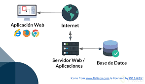
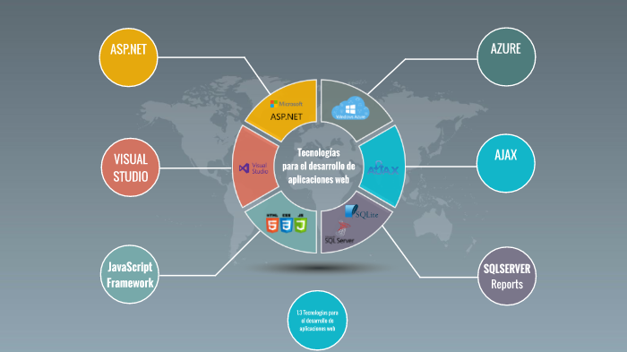

FUNCIONAMIENTO DE LAS APLICACIONES WEB
Los servidores web administran las solicitudes del usuario; luego, el servidor de aplicaciones
completa la tarea solicitada y genera los datos requeridos. Finalmente, la base de datos almacena la
información. El servidor de aplicaciones web envía esos resultados al servidor web, y así la
información solicitada aparece en la pantalla del usuario.
CARACTERISTICAS DE LAS APLICACIONES WEB
Accesibilidad y compatibilidad: las aplicaciones web son accesibles desde todos los navegadores web,
por medio de diferentes dispositivos y desde diferentes ubicaciones.
Escalabilidad: las aplicaciones web pueden agregar usuarios cuando sea necesario, sin requerir infraestructura
adicional o hardware costoso.
"Almacenamiento eficiente: la mayor parte de los datos de las aplicaciones web se guardan en la nube, por lo que
las empresas no requieren invertir en almacenamiento adicional para ejecutarlas. Por su parte, los usuarios no tienen
que descargar las aplicaciones y no se requiere capacidad en el disco duro para usarlas."
Automatización y seguridad: las aplicaciones web reciben actualizaciones automáticas de software y seguridad,
por lo cual siempre están funcionales, rápidas y pueden mitigarse sus riesgos de seguridad.

Link: Qué son las aplicaciones web y 8 ejemplos. (2023, 21 enero). Hupsot.
https://blog.hubspot.es/website/que-es-aplicacion-web#:~:text=%C2%BFC%C3%B3mo%20funciona%20una%20aplicaci%C3%B3n%20web,de%20datos%20almacena%20la%20informaci%C3%B3n.
CUALES SON LAS TECNOLOGIAS PARA PARA EL DESARROLLO DE LAS APLICACIONES WEB
El desarrollo de aplicaciones web implica una variedad de tecnologías, que se dividen en dos categorías principales:
frontend (lo que el usuario ve e interactúa) y backend (lo que sucede en el servidor).
Aqui estan las principales tecnologias de cada area:
Frontend (cliente): Estas tecnologías son responsables de la interfaz de usuario y la experiencia visual de la aplicación web.
HTML (Lenguaje de marcado de hipertexto) : Es el lenguaje básico de marcado para crear la estructura y el contenido de una página web.
JavaScript : Un lenguaje de programación que permite la creación de contenido dinámico e interactivo en una página web.
Marcos y bibliotecas de JavaScript :
React : Biblioteca desarrollada por Facebook para crear interfaces de usuario con componentes reutilizables.
Preprocesadores CSS :
Sass : Un preprocesador que permite escribir CSS de manera más eficiente con variables y funciones.
Backend (servidor)
Las tecnologías de backend son responsables de gestionar la lógica, las bases de datos y la autenticación de la aplicación.
Herramientas complementarias :
Automatización y construcción :
Webpack , Parcel : Empaquetadores de módulos que permiten optimizar el código para producción.
Estas tecnologías pueden variar según el tipo de aplicación web que se esté desarrollando y las necesidades específicas del proyecto.

LINK: ILERNA. (s.f.). Tecnologías para el desarrollo de aplicaciones web. ILERNA. https://www.ilerna.es/blog/tecnologias-desarrollo-aplicaciones-web